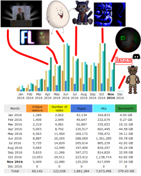
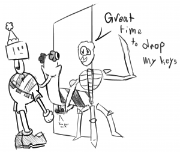
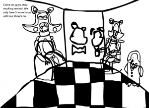
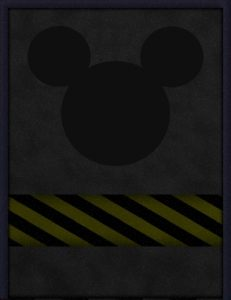
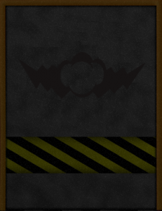
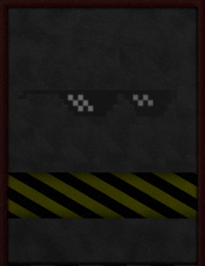
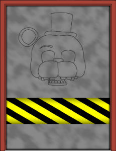
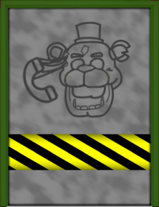
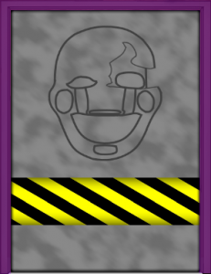

If you see any issues, please do make us aware via our Contact Form.
Thank you for browsing FNaFLore.com, we hope you enjoy the improvements that are coming to the site!

December Update
In this update, I’d like to ask for your opinion on the site a bit later into the post, but I’d like to open on what’s been done, what’s being planned and the site itself.
I’d first like to promote both the FNaFLore Discord and Forums! We’ve tried to revamp both of them, but could not fully sort them out before December. Still, we’ve made a lot of changes, and would love to have some new theorists dive in and share their thoughts, so we can all discuss the lore and get just a bit closer to a final, correct timeline!
It would seem that FNaFLore’s somehow made it to December, without having been DDoS’d, hacked or overloaded bandwidth-wise. The year has been amazing, and FNaFLore’s first 1 year anniversary is now fast approaching! So, I’d like to briefly talk about how the site has gained it’s popularity, the highs, lows and where I hope to take the site. I’ve spoilerised it, so please, feel free to skip it if you’d not like to read through it.
{kind=link}

FNaFLore’s been in operation since the 24th of January, and since then, it’s grown quite a lot. To the left, I’ve marked a few landmarks of the site’s history.The site started small, just getting things in order. The teasers, the phone transcripts and so on. The site itself didn’t begin to grow until April, which marked the start of proper activity for the site.
The April Fools page helped jump-start the site quite well, and I look forward to next year. Now Sister Location has come and gone, I can finally correct that page, and show what is, truly, inside the box.
I announced Fangames on my birthday in May, and that led to a lot of excitement from the community. I did notice a fair bit of fan art created, which was very nice! here is some of that fan art, linking to the threads they came from. You can find full resolutions by following those links!
 |
 |
 |
 |
 |
 |
 |
 |
 |
 |
 |
 |
It was a very fun time, and I’ve never felt so humbled to the community for their interest in the site!
From there, the site kept chugging along until the whole The Dolls drama. Funnily enough on that, Game Theory made a video a while back on the legality of fan games, which touched on the exact worry I was conveying.
As frustrating as it was to see the disappointing result of Scott’s impression of the site being significantly damaged, the drama undeniably increased the site’s popularity. There were mistakes made then, which I cop to. Weaponising Jim Sterling’s opinions was not in good faith (I did not even consider I was doing that at the time), though I do not regret asking for his opinion. I’d do so for any other company, from Digital Homicide, to VALVe. My sole worries lay with the repercussions to the larger games industry, not specifically to Scott.
June was a fantastic month, and was the start of the ONaF fangame section. The launch went really well, after the initial breakdown of my site. It was practically DDoS’d for the first half hour of the timer counting down! I would like to again thank Jonochrome for all his help, as well as his commissions of the missing Mummy-Beaver and Champ and Chump characters, as well as both Darth_Twitchy and FLHorn, who together saved the day with the rest of the illustrations!
But, there was a more turbulent side of June. June marked the Basetown revolt, which ultimately led to Basetown passing the lead moderator position to Invaderzz. This started with a push from the community over why, for the most part, Basetown was totally absent from the MemeMachine incident, which led to the Reddit going down. This however was compiled with many different facets of bad blood in the community.
In the end, the community kicked up a big fuss, which went largely ignored by the mod team. It felt like Basetown was lying low, as per the last time this occurred when it was spearheaded by ToyChica, I’ve been led to believe. He announced a poll over what should happen, and went very quiet when it came back with people wanting Invaderzz to take the charge. Of course, FNaFLore threw it’s weight behind the community, and through everyone, we got that change. I do want to stress though, this was never really about Basetown existing in the mod team at all. That was never a goal. The sole goal was to change the setup of mods. I can’t speak to him as a person, though others certainly did. I’ve no beef with him, and I would like to think the relationship is thawing, even if we basically never talked to each other.
Still, that went over, and the subreddit is now much more improved. With the new moderators too, I have great hope in the future of the mod team. I’m sure they’ll survive. For now. IT HURTS IT HURTS IT HURTS IT HURTS
July led to the Candy’s page release, which also went over well. Sadly, most of the section could not be completed in time. Some parts are still unfinished, which I plan to get to as soon as I can. Still, I’d like to thank Emil for his help during the fangames event, which included supplying the outline for the door design, the renders of the Tragedy Puppet and Shadow Candy as well as the fandoor background itself (minus the cats fused onto their bodies. that was me).
Still, July was both a high, and a low. what came next was Popgoes. A very good game, who’s lore was largely told within 48 hours. It was one hell of a turnabout, and led to a lot of confusion and frustration. Due to conflicting information regarding Popgoes potentially reverting to a much worse lore that I couldn’t feature, I had to make a choice. Lose a fair month’s work I’d set up to make the page look nice, while disappointing fans, or going against the new proposed lore. I floated the idea, and what a shitshow that became. People on both sides were shouting their objections and agreements. The actual vote was split 50/50, sometimes wavering to Popgoes, sometimes wavering away. Right now, it seems to still be running. It’s actually at 56%-44% in favour of ignoring the percieved plot.
It was not a fun time at all. I’ve since gone back on all I’ve said since, after the truth came out. This information was very outdated, misremembered and while not discussed much, was wrong in large part. At the time, the hype of the community was deafening, and I sadly jumped onto a bandwagon. I’ve since issued a full apology to Popgoes, and we’ve made up by and large, though things have been noticeably more distant than before the event. Which, is to be expected. The current site will adhere to the lore in the game, now it’s clear that the lore has not changed since release.
Still, it was a good lesson. When I jumped onto adding Popgoes, the lore was in shambles. I had blindly jumped on board with a lore that made no sense whatsoever, and due to that, I’ve been very careful in accepting any fan content on the site since. FNaFLore is about the lore, and if the lore is not of a good quality, I won’t feature it. Even nicely presented or otherwise games, such as TNaR, TRTF and FNaFuckboys, I simply can’t feature due to their respective lore problems of being a total joke, being sidelined for gameplay and being so convoluted that it makes less sense than the Fredbear bite being in 1987.
Which, if we skip by the final results of the Flumpty Q&A being released quickly, leads to Sister Location in October which proved me right 100%. It was 1983 and everyone called me crazy for thinking it. The vindication is real. So real.
Still, the game was not without it’s flaws, which I laid bare in my review. I still feel very bitter to Night 4, and the overall lack of consistency in gameplay, but let’s hope Custom Night will help with that issue!
Which leads us to today, with absolutely no events being teased or planned. November was meant to be the big social push, but there’s so much more to do, I’ll need to make that a more prolonged event. Still, November’s come and gone, and now, I look to the future of the site, and where that future will take FNaFLore!
I’d like to end in this section by thanking everyone who’s helped me with this site. Emil, Jonochrome and Popgoes are the ones that immediately spring to mind, but Darth_Twitchy, FLHorn, GunkyStuff and Everything_Animations have been invaluable to ensuring all these fan sections can go ahead.
I’d also like to shout out to Momerator, JuniorGenius, TheWholiganofGallifrey, Retroity and Kenan who have all helped to make the Discord and Forums a better place for all our guests.
I’d also like to thank the Reddit mods Invaderzz, Squidnow, TheFrodo, Springweb, Basetown, f-n-a-f-g-y-f-r and Momerator for their continued support for this site, as well as their renewed and continued support for the entire community. Without them, the community would be a lot less active!
Special thanks goes to LAK, Phisnom, JustinIDBG and the Ratchat. It’s been a bit of a wild ride, and while not all of them have made it easy, they’ve certainly made it more fun.
Finally, without wanting to seem clichéd, there’s also Scott to thank for his games. He may think I’m some ass with a vendetta who has a “pass” of having a mental disability, but frankly, I own all my actions as my own, disability aside. I feel I regret disclosing my Aspergers, as it may have coloured his view on me. Also, I’m actually a very large fan – particularly of his storytelling style. Subtle storytelling is such an overlooked detail, and I’m happy he’s brought it back to the limelight for other games. It’s all about that finer detail. A simple blood splatter could tell you everything or nothing, depending on if the person designed a direction, consistency, freshness or arrangement.
I may call out things that could harm the community, give very critical overviews of his games and try to push changes that I feel he needs to take, but I do so out of full respect for him, and not wanting his games to grow stale. He does amazing charity work, has a decent sense of humour and is far too generous to his fanbase. Refunding FNaFWorld was beyond what was necessary, and I’m proud to have not refunded that game. That was an unmatched action on Steam, and while I don’t feel it should have been taken, to have done so shows a true commitment to the community over potential profits, which I fully respect.
The Future
There is still so much to do, and such a small window to do it in! So, I’ll go ahead and announce the next FNaFLore project!
 The Popgoes update is going ahead. There is no solid day that I’ll be unlocking the Popgoes section, but it’s the next big thing to sort out! I have all but 1 render sorted, and have most of the audio transcribed at this point. This section will have a large developer section too, due to the sheer amount of content I could find for Popgoes.
The Popgoes update is going ahead. There is no solid day that I’ll be unlocking the Popgoes section, but it’s the next big thing to sort out! I have all but 1 render sorted, and have most of the audio transcribed at this point. This section will have a large developer section too, due to the sheer amount of content I could find for Popgoes.
I’d like to make a final appeal here. I’ve tried to find 2 teasers for Popgoes. One was animated, which showed a single arcade machine flickering between screens, and the other was a set of bloodied paychecks. Please, if you have them, get in touch so I can complete the collection for everyone!
There will also be a second push for the community side of FNaFLore. I’ve been working on a game for the site, and it’s about 1/8 complete. It should be loads of fun for all involved!
Finally, I want input on the community pushes for FNaFLore. if you could spare just a minute or two to fill it out, that would be immensely helpful!
Until next time, thanks again for all of your support. It means so much to me, and I hope you all have a great winter, coming up to Christmas!
Kizzycocoa – Owner and designer of FNaFLore.com